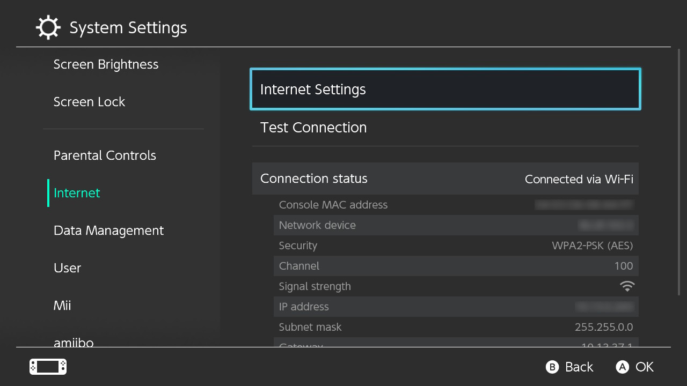

setting up lan-play to trade with hacked switches or anyone use lan-play
this guide is based from install page on lan-play.com
first you need to download the WinPcap from this url https://www.winpcap.org/install/default.htm
get WinPcap_4_1_3.exe from here then install it on your computer.
get the client for pc from https://www.lan-play.com/download
put the client exe in a place that you will know where.
open the lan-play-win64.exe or lan-play-win32.exe depends which exe you downloaded.
it will ask for the server listed at lan-play.com
you and your friends have to be on same server.

Go to your switch and go in your system settings and go to your internet settings.
You need to manually edit the configuration of your local network with this informations.
Note: The IP address can be any from 10.13.0.1 to 10.13.255.254, excepting 10.13.37.1. But don't use the same IP address with your friend.
pick really random last two numbers for ip like 10.13.78.33 only 1 to 255 everyone on server need to have different ip address.
for example, you are using 10.13.53.30, you need to tell your friend to use 10.13.53.31
IP Address Settings
IP Address: 10.13.XX.YY
Subnet Mask: 255.255.0.0
Gatewway: 10.13.37.1
DNS settings
Primary DNS: 163.172.141.219
Secondary DNS: 45.248.48.62
Please follow the screenshots:


reconnect to your network to make sure you are using lan-play
The games have different settings for lan-play
I will use Pokemon Sword game as a example.
hit X then go to the options and press both R and L and press on your left joystick.
It should show up the dialog that the game is in LAN mode. hit A and go back to the game.
you should start seeing people in Y and on your game screen.
Some games need ldn_mitm kip installed. check [lan-play.com for a list of games that need this sysmodule]. Those games would only limit to hacked switches :(
Returning to normal wifi
you just have to change the IP settings to Automatic to use normal wifi.
the lan-play IP settings will be saved for later use.
Supported games list for both hacked and unhacked switches
- Pokemon Switch (Press L+R+left joystock in the options)
- Pokemon Shield (Press L+R+left joystock in the options)
- Mario Kart 8 Deluxe (Press L+R+left joystock on the main menu selection)
- Mario Tennis Aces Select (Free Play from the Main Menu. Press left joystick (hold down) and press L + R.
- ARMS (press L + R + left joystick on the main menu screen)
- Pokken Tournament DX (From the main screen select a game. Press X + dpad down and press L + R)
- Titan Quest